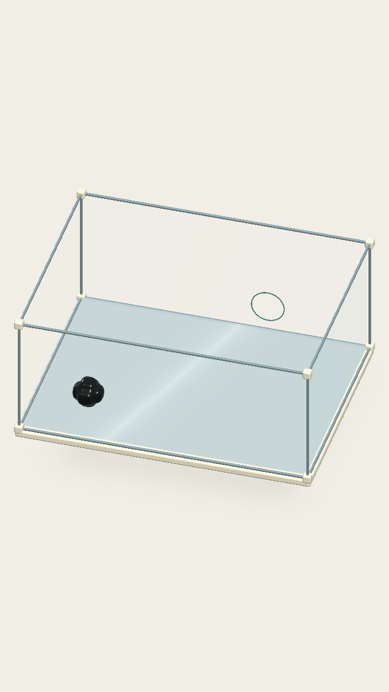
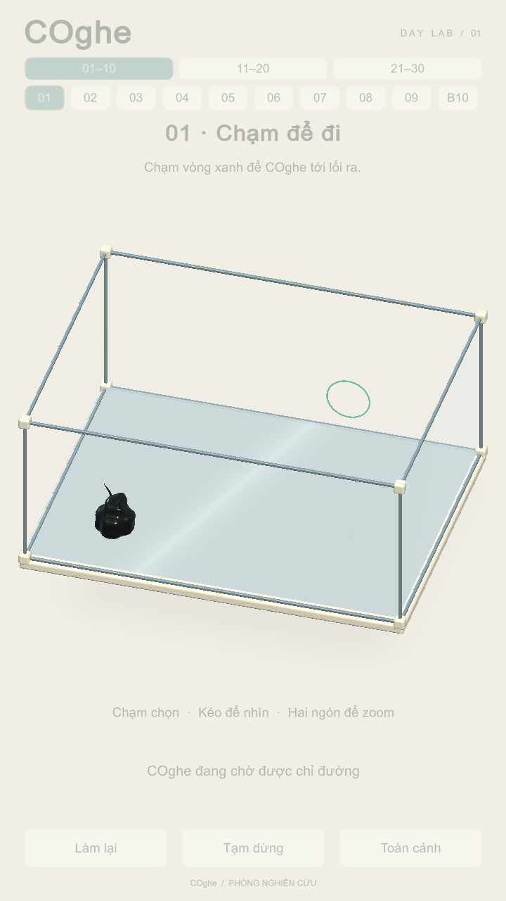

01 · COghe trong hộp kính
Khung nhôm mảnh, góc sứ, kính trong và sàn xanh nhạt. Viền lỗ mint phẳng; giữ nguyên cơ thể, thao tác chạm, orbit và layout V2.

Render trực tiếp bằng camera Unity, không vẽ lại bằng AI.
Ảnh bản Mac chạy thật. HUD mờ vì các nút được khóa riêng trong lượt đo tự động; khi chơi bình thường HUD hoạt động như cũ.Báo cáo kiểm tra · Bản chơi: Builds/GlassPreview/macOS/COghe.app